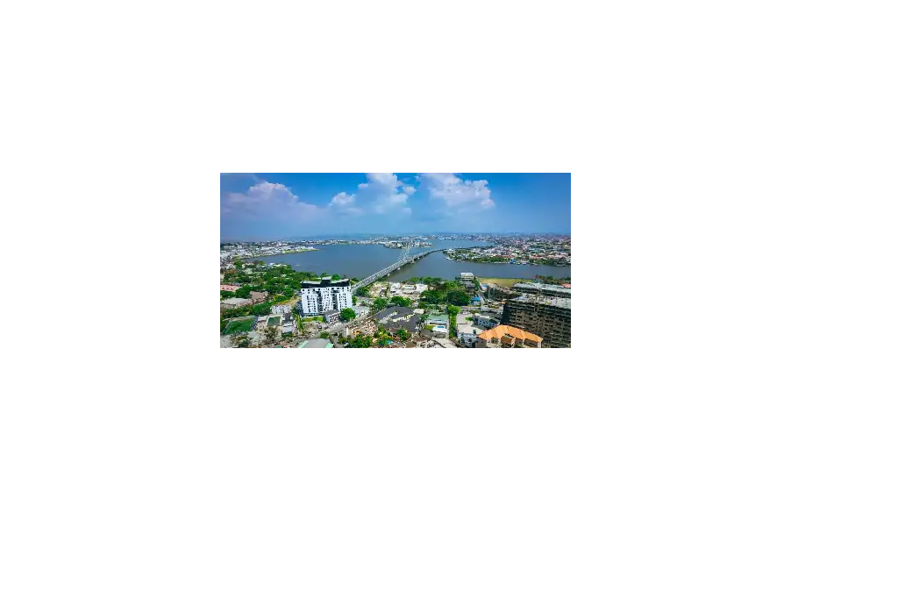

Data
- Capital: ikeja
- Population: 17.2 million
- Official Languages: English, Igbo, Hausa, Yoruba
- Currency: Naira (NGN)
- Continent: Africa
- Famous Landmark: Ikoyi Link Bridge
Weather ⛅
- Temperature: 30°C
- Conditions: Partly Sunny
- Wind: 13 km/h
- Wind Chill: 26°C